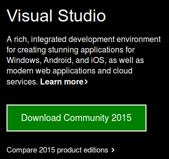
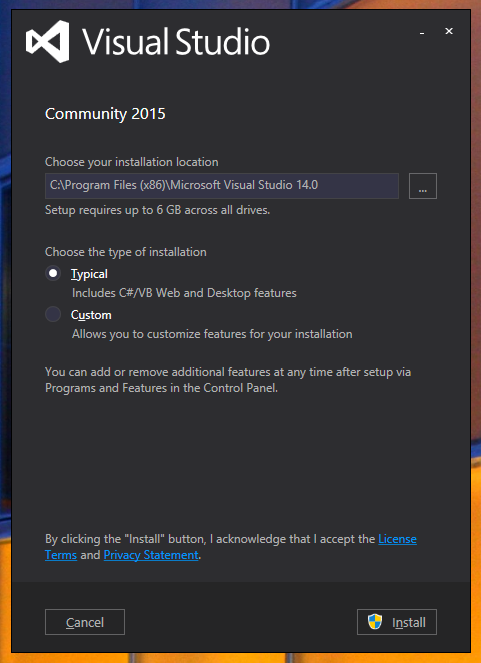

visual studio setup guide
Here are the setup instructions for those of you who wish to work with Visual Studio 2012, Express for Windows Desktop version included.
Download
Navigate to the Visual Studio and download the Community edition of the Visual Studio IDE.

Install
Run the installer, and let it install to the default configuration.

Video Codecs
Starting in OF release 0.9.0 the video player now uses DirectShow and not QuickTime. To support QuickTime video files or files like MP4 video you will need to install the video codecs onto your machine. We recommend the K-Lite Codec Pack which is free to download and adds support for many video formats. However a lot of codec sites have adware bundled. This link and codec pack has been tested with OF https://ninite.com/klitecodecs/ and it automatically removes any adware from the installer before download.
openFrameworks plugin for Visual Studio
From visual studio, go to Tools > Extensions and Updates. Select online and search for openFrameworks and install the plugin.
That will allow you to use File > New > Project... to create new openFrameworks projects and the contextual menu on any project to later add and remove addons
There's more information in the Visual Studio Gallery page and the following video.